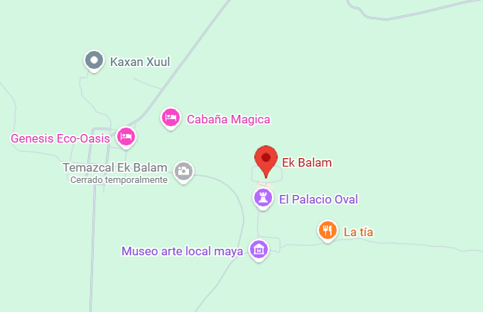

Ek Balam: La Joya del Jaguar Negro

Ek’ Balam es una antigua ciudad maya situada en el norte de Yucatán, México. Fundada alrededor del siglo III d.C., fue un centro político y ceremonial destacado del periodo Clásico. El sitio es famoso por la Acrópolis, una enorme estructura decorada con relieves en estuco y figuras aladas únicas en el mundo maya. Ek’ Balam refleja la avanzada arquitectura y el arte detallado de los mayas, además de contar con murallas defensivas que muestran su importancia. Hoy es un sitio arqueológico reconocido por su excelente conservación y su valor histórico.
Ubicación |
Información Esencial
|